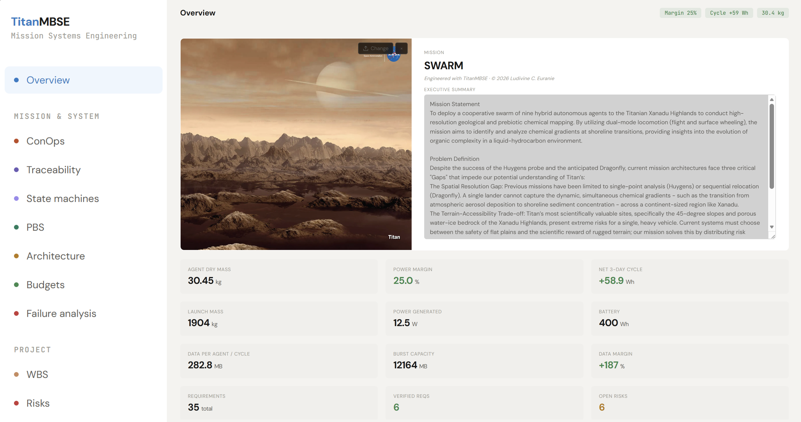
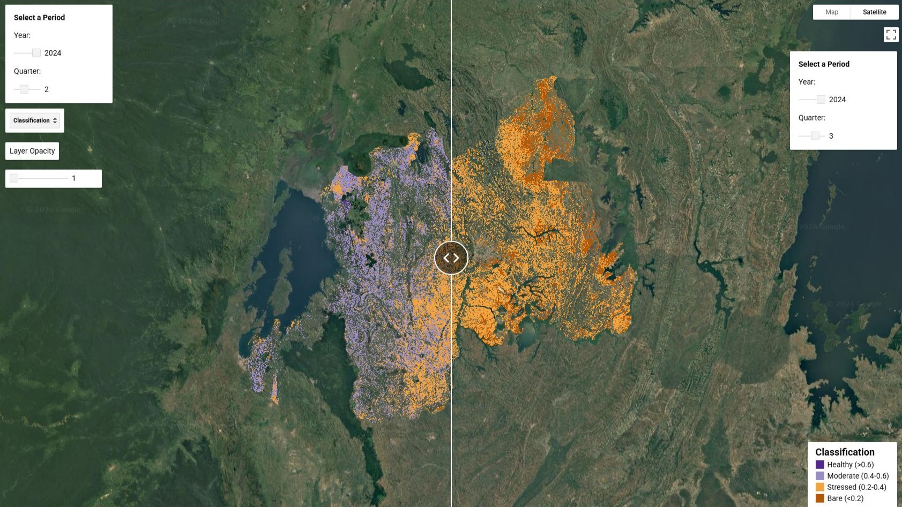
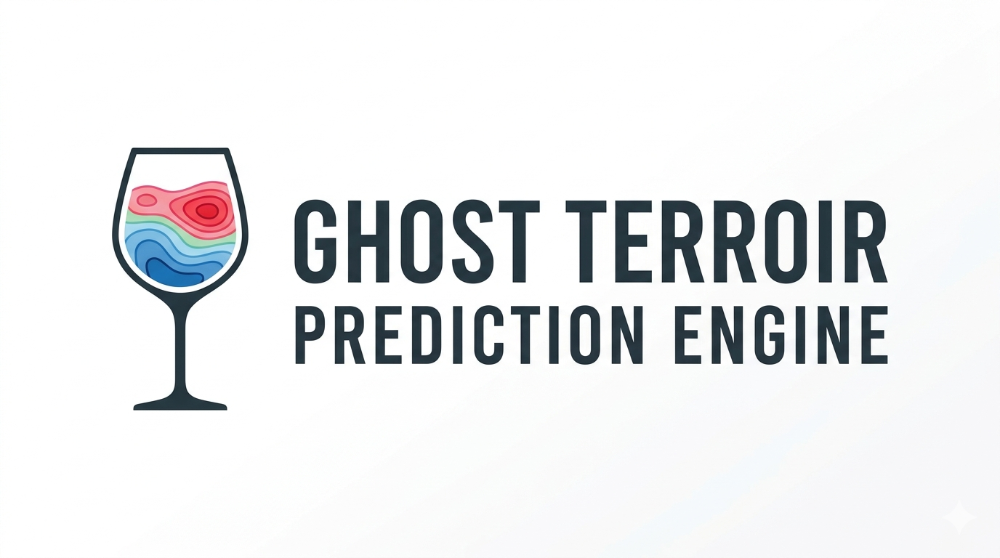
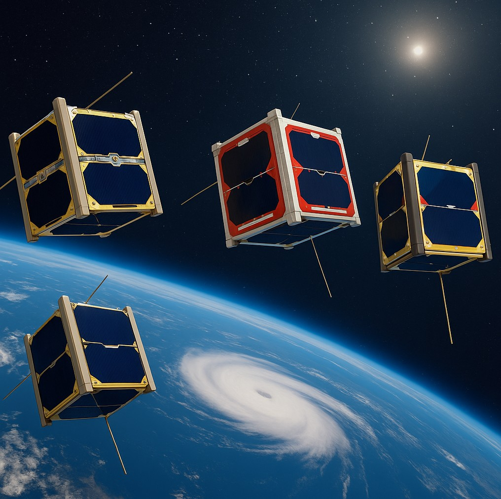
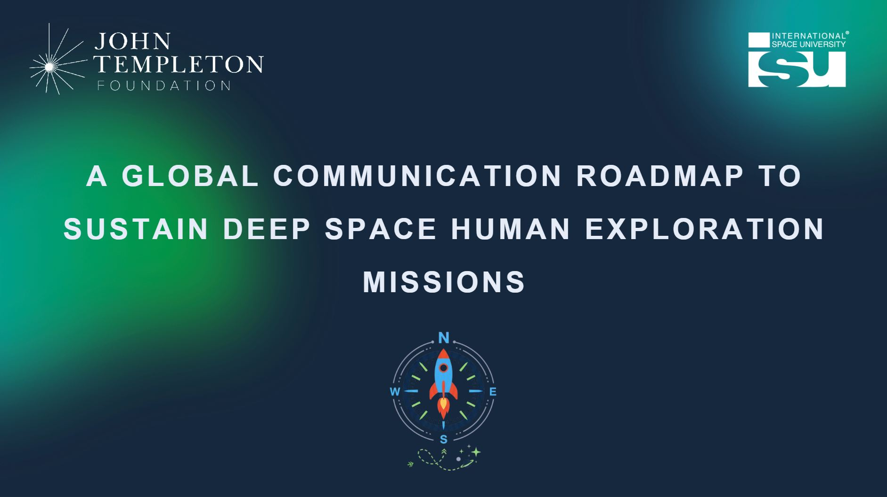
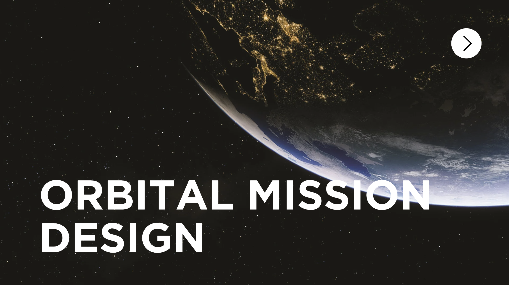
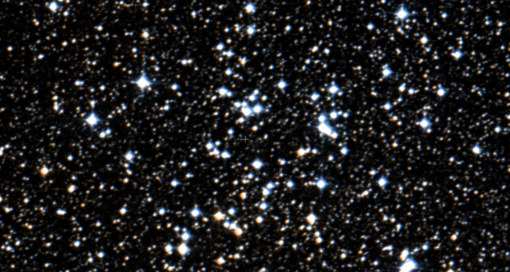
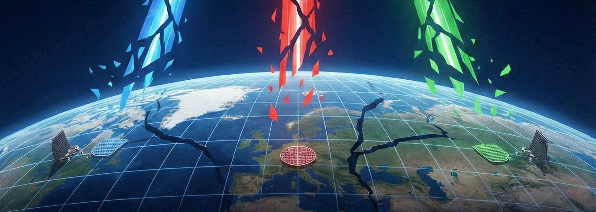
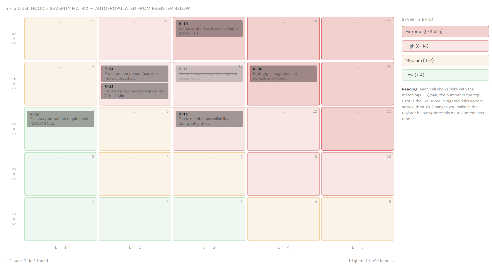

Project Manager · Space Systems Engineer · EO Specialist
Bridging earth observation, mission design, and programme delivery.
Master of Space Studies candidate at ISU (CNES Scholarship), with ten years delivering industrial geosciences and digital-transformation projects. Building tools and missions for the European space sector — civil and dual-use.
Recent & representative

TitanMBSE + Titan Hybrid Swarm
A browser-based, ECSS-aligned MBSE tool I built solo (~7,700 lines, single HTML), and the three-person team mission concept it powered: a fly-and-roll swarm exploring Titan's Xanadu Highlands.

Rwanda Vegetation Health
A team digital poster for ISU's AI in Space Poster Session: a Sentinel-2 + GEE prototype classifying Rwandan vegetation health, with a Pan-African GeoAI roadmap for food security.

Terroir Prediction Engine
Live GEE app finding the 2050 climate analogues of fourteen iconic wine vintages. Hybrid ERA5-Land / TerraClimate / MODIS / Sentinel-2 stack, with PCA + k-means clustering and SVR downscaling.
All work

Eyesat-1 — 1U CubeSat
Hurricane cloud-monitoring CubeSat prototype. End-to-end integration: payload, OBC, COMMS, ADCS, EPS, ground station. V&V completed.

Global Communication Roadmap — Deep Space
JTF-sponsored, 20-person ISU team project. A 15-year, 3-phase, 91-strategy framework to sustain global public engagement in deep space human exploration. I served as Report Head. Accepted for IAC 2026.

European Space Defense Administration
A federal governance framework and €15 billion annual roadmap to consolidate fragmented European space assets into a unified command structure. Workshop strategy proposal.

Orbital Mission Design — STK
Modelled orbital scenarios, eclipse cycles, and access windows for mission-specific geometries. STK Level 1 certified.

NGC 4852 — Astronomical Data Mining
Curating an open-cluster membership from Gaia DR3: 10,989 cone-search sources to 212 clean members, validated against literature.

SBSP — Global Roadmaps
A 4,000-word individual report arguing that incompatible national success metrics — not technology readiness — are the real bottleneck for Space-Based Solar Power.

Geosciences — 10 yrs at SLB
300+ geophysical studies, VSP processing, reservoir characterisation, hydraulic fracture monitoring. $15K – $1M revenue per project. Field and remote acquisition leadership.

Project Management — Digital Transformation
Multi-phase information system migration across Europe; +50% data integrity. 10+ projects, cross-functional teams, ESA-equivalent governance and review.
Communities & affiliations
Open to collaboration
An ESA internship is confirmed for August 2026 – January 2027. After that I am looking for roles in EO data processing, systems engineering, programme management, and dual-use / military space — at agencies, primes, or downstream operators across Europe. Happy to discuss research collaboration or earlier engagement.
- LinkedIn
- /in/lceuranie
- ResearchGate
- profile
- Location
- Strasbourg, France